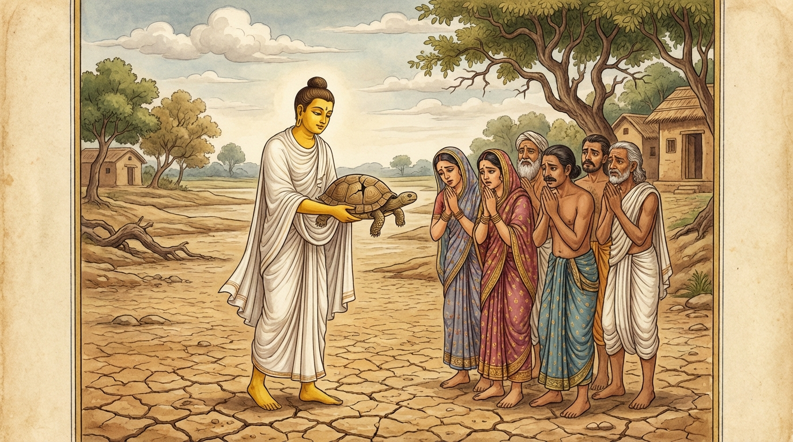

8. කච්ඡප ජාතකය (178)
“ජනිත්තං මෙ භවිත්තං මෙ” (මාගේ උපන් බිමය, මාගේ වැඩුණු බිමය) යනාදී වශයෙන් එන මේ ධර්ම දේශනාව ශාස්තෲන් වහන්සේ ජේතවනාරාමයේ වැඩවසන සමයෙහි, එක්තරා අහිවාතක රෝගයෙන් (මහා මාරියෙන්) මිදුණු පුරුෂයෙකු අරභයා දේශනා කරන ලදී. සැවැත් නුවර එක් කුල ගෙයක අහිවාතක රෝගය හටගත්තේය. මව්පියෝ පුතු අමතා, “දරුව, මේ ගෙදර නොරැඳෙන්න. බිත්තිය බිඳගෙන පලා ගොස්, කොහේ හෝ තැනකට ගොස් දිවි රැකගන්න. පසුව නැවත අවුත් අසවල් ස්ථානයේ මහා නිධානයක් ඇත, එය ගොඩගෙන කුටුම්බය පිහිටුවාගෙන සුවසේ ජීවත් වන්නැ”යි කීහ. පුතණුවෝ ඔවුන්ගේ වචනය පිළිගෙන බිත්තිය බිඳ පලා ගොස්, තමන්ගේ රෝග බිය සංසිඳුණු පසු නැවත පැමිණ, මහා නිධානය ගොඩගෙන කුටුම්බය පිහිටුවාගෙන ගිහි ගෙයි විසූහ. හෙතෙම එක් දිනක් ගිතෙල්, තෙල් ආදිය ද වස්ත්ර පොරෝණ ආදිය ද රැගෙන ජේතවනයට ගොස් ශාස්තෲන් වහන්සේ වැඳ එකත්පස්ව හුන්නේය. ශාස්තෲන් වහන්සේ ඔහු හා පිළිසඳර කථා කොට, “ඔබේ නිවසෙහි අහිවාතක රෝගය හටගත්තේ යැයි ඇසුවෙමු, ඔබ කෙසේ නම් එයින් මිදුණෙහිදැ”යි විචාළ සේක. හෙතෙම එම පුවත පැවසීය. එවිට ශාස්තෲන් වහන්සේ, “උපාසකය, පෙරත් නුවණැත්තෝ බියක් හටගත් කල්හි තමන් වසන ස්ථානයට ආලය කොට වෙනත් තැනකට නොගොස් ජීවිතක්ෂයට පත් වූහ. එහෙත් ස්ථානාලය (වාසස්ථානයට ඇති ඇල්ම) හැර දමා අන් තැනකට ගිය අය ජීවිතය ලද්දාහු ය”යි වදාරා, ඔහු විසින් අයදින ලදුව අතීත කථාව ගෙනහැර දැක්වූ සේක.
යටගිය දවස බරණැස් නුවර බ්රහ්මදත්ත රජු රාජ්ය කරන සමයෙහි බෝධිසත්ත්වයෝ කාසි ගමක කුඹල් කුලයක ඉපිද කුඹල් කර්මාන්තය කරමින් අඹුදරුවන් පෝෂණය කළහ. එකල බරණැස මහ ගඟ හා ඒකාබද්ධ වූ ස්වාභාවික මහ විලක් විය. එය ජලය අධික කාලයේදී ගඟ හා එක්ව එකම ජලාශයක් වෙයි. ජලය අඩු වූ කල්හි වෙන් වෙයි. මත්ස්යයෝ සහ කැස්බෑවෝ “මේ වසරේ හොඳින් වැසි ඇති වෙයි, මේ වසරේ නියඟ ඇති වෙයි” යැයි දනිති. ඉන්පසු එම විලෙහි උපන් මත්ස්යයෝ සහ කැස්බෑවෝ “මේ වසරේ නියඟය ඇති වන්නේය”යි දැන ජලය ඒකාබද්ධ වී ඇති කාලයේදීම එම විලෙන් නික්ම ගඟට ගියහ. නමුත් එක් කැස්බෑවෙක් “මේ මා උපන් ස්ථානයයි, මා වැඩුණු ස්ථානයයි, මව්පියන් විසූ ස්ථානයයි, මෙය අතහැර යාමට නොහැක්කෙමි”යි ගඟට නොගියේය. පසුව ගිම්හාන සමයෙහි එහි ජලය සිඳී ගියේය. ඒ කැස්බෑවා බෝධිසත්ත්වයන් මැටි ගන්නා ස්ථානයේ බිම හාරා පස් තුළට රිංගා ගත්තේය. බෝධිසත්ත්වයෝ “මැටි ගන්නෙමි”යි එතැනට ගොස් මහ උදැල්ලකින් බිම හාරන විට කැස්බෑවාගේ පිට කටුව බිඳී ගිය අතර, මැටි පිඬක් මෙන් උදැල්ලෙන්ම ඌ ඔසවා ගොඩබිම හෙළූහ. හෙතෙම දැඩි වේදනාවට පත්ව “වාසස්ථානයට ඇති ඇල්ම අත්හැරීමට නොහැකිව මෙබඳු විනාශයකට පත් වීමි”යි කියමින් වැළපෙමින් මේ ගාථාවන් කීවේය:
“ ‘මේ මාගේ උපන් බිමය, මේ මාගේ වැඩුණු බිමය’ යැයි සිතා මඩෙහි ලැගුම් ගත්තෙමි. යම් සේ මඩ තෙමේ දුබලයෙකු යටපත් කර විනාශ කරන්නේ ද, එසේම ඒ මඩ මා ද විනාශයට පත් කළේය. භාර්ගවය, එබැවින් ඔබට කියමි; මාගේ වචනය අසන්න.”
“ගමෙහි හෝ වේවා වනයෙහි හෝ වේවා යම් තැනක සුවය ලැබේ නම්, කාරණා කාරණා දන්නා පුරුෂයාට එයම උපන් බිම ද වැඩුණු බිම ද වන්නේය. යම් තැනක ජීවත් විය හැකි ද එතැනට යා යුතුය. වාසස්ථානයට ඇලී ගලී විනාශ නොවිය යුතුය.”
යනුවෙන් මේ ගාථාවන් පැවසුවේය.
එහි අර්ථය මෙසේය: ජනිත්තං මෙ භවිත්තං මෙ යනු ‘මේ මාගේ උපන් ස්ථානයයි, මේ මාගේ වැඩුණු ස්ථානයයි’ යන අදහසයි. ඉති පඞ්කෙ අවස්සයිං යනු මේ කරුණ නිසා මම මේ මඩෙහි ඇලී ගැලී හොත්තෙමි, වාසය කළෙමි යන අර්ථයි. අජ්ඣභවි යනු යටපත් කළේය, විනාශයට පැමිණවීය යන්නයි. භග්ගවා යනු කුඹල්කරු ආමන්ත්රණය කිරීමයි; ‘භග්ගව’ යනු කුඹල්කරුවන්ගේ නාම ගෝත්ර ප්රඥප්තියකි (ව්යවහාරයකි). සුඛං යනු කායික හා චෛතසික ආස්වාදයයි (සුවයයි). තං ජනිත්තං භවිත්තඤ්ච යනු එයම උපන් ස්ථානය ද වැඩුණු ස්ථානය ද වන්නේය. ‘ජානිත්තං භාවිතං’ යනුවෙන් දීර්ඝ ස්වර සහිත පාඨයක් ද ඇත, එහි අර්ථය ද එයම වේ. පජානතො යනු අර්ථ අනර්ථ හා කරුණු අකරුණු දන්නා තැනැත්තාට ය. න නිකෙතහතො සියා යනු වාසස්ථානයට ආලය කොට, වෙනත් තැනකට නොගොස්, වාසස්ථානය නිසා නැසුණු, මෙබඳු මරණ දුකකට පැමිණි කෙනෙකු නොවිය යුතුය යන්නයි.
මෙසේ ඒ කැස්බෑවා බෝධිසත්ත්වයන් හා කථා කරමින් සිටියදීම මරණයට පත් විය. බෝධිසත්ත්වයෝ ඌ රැගෙන මුළු ගම්වාසීන්ම රැස්කරවා ඒ මිනිසුන්ට අවවාද දෙමින් මෙසේ වදාළහ: “මේ කැස්බෑවා දෙස බලන්න. මූ අන්ය මත්ස්යයෝ සහ කැස්බෑවෝ මහ ගඟට යන කල්හි, තමාගේ වාසස්ථානය කෙරෙහි ආලය සිඳ ගැනීමට නොහැකිව, ඔවුන් සමග නොගොස් මා මැටි ගන්නා ස්ථානයට වැදී ලැගුම් ගත්තේය. ඉන්පසු මා මැටි ගනු පිණිස මහ උදැල්ලකින් පොළොව හාරන විට උගේ පිට කටුව බිඳී ගිය අතර මැටි පිඬක් මෙන් මම ඌ ගොඩබිමට හෙළුවෙමි. මූ තමන් විසින් කරගන්නා ලද කර්මය සිහිකොට ගාථා දෙකකින් විලාප නඟා මරණයට පත් විය. මෙසේ මූ තමාගේ වාසස්ථානයට ආලය කිරීම හේතුවෙන් මරණයට පත් විය. එබැවින් ඔබලා ද මේ කැස්බෑවා වැනි නොවන්න. මෙතැන් පටන් ‘මාගේ රූපය, මාගේ ශබ්දය, මාගේ ගන්ධය, මාගේ රසය, මාගේ ස්පර්ශය, මාගේ පුත්රයා, මාගේ දියණිය, මාගේ දාස දාසියෝ, මාගේ රන් රුවන්’ යැයි තෘෂ්ණා වශයෙන් හෝ පරිභෝග වශයෙන් හෝ නොගන්න. මේ සත්ත්වයා හුදෙකලාවම ත්රිවිධ භවයේ පරිවර්තනය වෙයි (සැරිසරයි).” මෙසේ බුද්ධ ලීලාවෙන් මහජනයාට අවවාද දුන්හ. ඒ අවවාදය මුළු දඹදිව පැතිරී අවුරුදු හැට දහසක් පමණ කල් පැවතුණේය. මහජනයා බෝධිසත්ත්වයන්ගේ අවවාදයෙහි පිහිටා දානාදී පින්කම් කොට ආයු කෙළවර දෙව්ලොව පිරවූහ (දෙව්ලොව උපන්හ). බෝධිසත්ත්වයෝ ද එසේම පින්කම් කොට ස්වර්ග පුරය පිරවූහ.

ශාස්තෲන් වහන්සේ මේ ධර්ම දේශනාව ගෙනහැර දක්වා, චතුරාර්ය සත්යය ප්රකාශ කොට ජාතකය සමාධාන කළ (ගළපා දැක්වූ) සේක. සත්ය දේශනාව අවසානයේ ඒ කුල පුත්රයා සෝවාන් ඵලයෙහි පිහිටියේය. “එකල කැස්බෑවා වූයේ ආනන්ද තෙරුන් ය. කුඹල්කරු වූයේ මම ම ය”යි වදාළ සේක.
අටවැනි වූ කච්ඡප ජාතක වර්ණනාවයි.